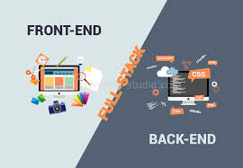

Le développeur front end programme la partie visible, l’interface utilisateur d’une app ou d’un site web à l’inverse du développeur back-end qui travaille dans l’ombre. Son métier ressemble à celui d’un intégrateur web, mais il a un rôle plus important dans la création d’une solution web grâce à ses nombreuses compétences en développement. C’est pourquoi on parle aussi de développeur intégrateur web.
